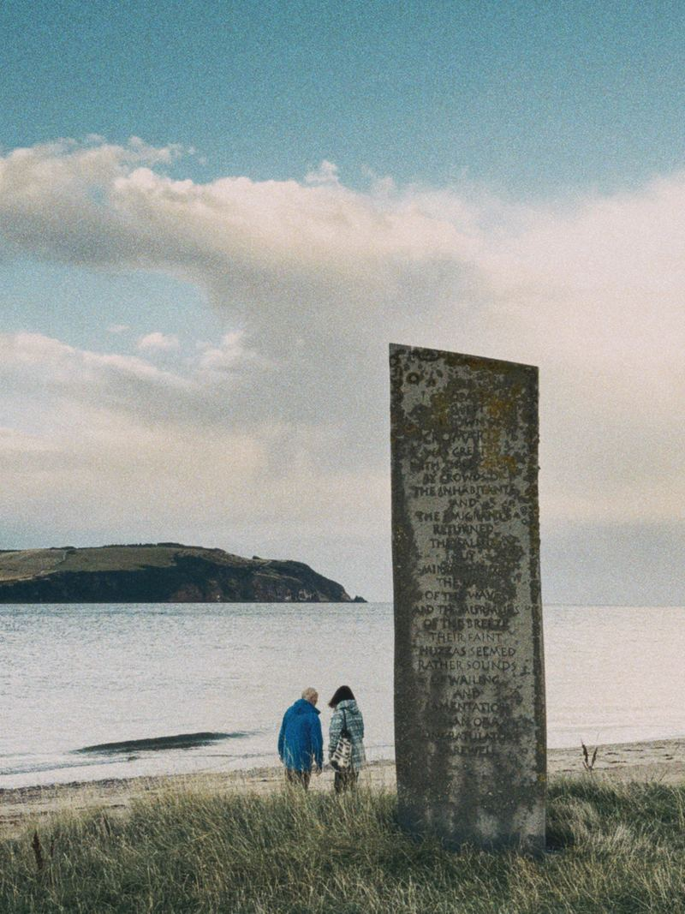

Statement
Levant Noir is my practice as a composer and performer of electroacoustic music, made between the modal traditions of the Eastern Mediterranean and the shores of Scotland. Old melodies from the lavta and mandolin meet analogue electronics and software I build myself. I am interested in how the presence of a place affects our collective memory, and the songs we make from it.
Listen first
Start here: two minutes, a lavta and the birds outside.
Blackbirds and a lavta
Listening room
Selected recordings and site-specific studies.
The full catalogue: music for screen, installation sound and rhythm studies
-
LN·01
Blackbirds and a lavta
While improvising with my lavta last spring in Glasgow, I realised the blackbirds were answering my music. I decided to capture this live fragment as I tried to improvise with them. A single, unedited take, no electronics.
Technical dossier
lavta · single acoustic capture · open-window environmental resonance
-
LN·02
Oud texture (Smyrna)
An oud passage recorded in the stone interior of the old bathhouse in Smyrna (Izmir), using its natural reverberation. A transient motif refracted through real-time granular fragmentation, short gestures frozen into resonant micro-loops that dissolve back into the chamber. Bendir and finger cymbals underneath.
Technical dossier
oud → granular freeze (Beads) · percussion → multi-tap delay (Magneto) · bells → pitch-shifted reverb (Mimeophon, Clouds) · stereo field rotation via Maths
-
LN·03
L’ambiance
Made for the installation Espacio Liminal (Galería Niebelungen, Berlin). Sub-bass foundations, slow-swept narrow band-pass filters, and slowed environmental recordings of glacial thaw, using deliberate voltage drift to mirror the perceptual adaptation of the ear to quiet spaces.
Technical dossier
Plaits (wavetable) · Ripples (band-pass, slow sweep) · Clouds (80% wet) · environmental recordings → Morphagene at half speed
-
LN·04
Lean candles
Opening theme for an Armenian documentary on political transition. A sample from a beautiful apricot-wood duduk over analogue bass synthesis and mechanical tape degradation. Down-tempo, the lament of the reed held in a modal scale.
Technical dossier
duduk → 3 s granular buffer · TR-8S rhythm architecture · Moog Sub 37 analogue bass · vinyl crackle → tape saturation → dynamic sidechain
-
LN·05
The shearwaters (in development)
Night recordings of two seabird colonies, Manx shearwaters on Rùm and Scopoli's shearwaters on islets off eastern Crete. Nocturnal colony sound, nesting calls from underground, and acoustic instruments, tracing the maritime geography that links two edges of Europe.
Technical dossier
nocturnal field recordings · acoustic instruments · archival voice materials · multi-channel spatial staging

Performance · Live Set
Between Two Shores: an imagined dialogue for lavta, mandolin, living electronics.
Old melodies from the Eastern Mediterranean tradition blend with the slow airs of the Hebrides. Drones, grain clouds, delays and explorations of space follow the excitation of the strings.
Suitable to be played solo or with a small ensemble, in listening rooms, galleries and old stone rooms.
Selected Live Documentation
- Live at Pianodrome, Edinburgh, with Samodiva Nestya & Friends
For bookings and technical requirements, write to hello@levantnoir.scot. A technical rider and a press kit are available on request.
Research · Critical Texts
Listening, gesture, and signal decay.
“The lavta’s frets are movable gut, displaced to hold microtones, set into the neck like geological strata. When I press between them, I meet the friction of many historical tuning systems on one fingerboard. My analogue electronics share this stubborn physicality: voltage drift, component age, the bloom of a filter on the edge of oscillation.”
An ongoing series of short critical pieces and field notes, on how Mediterranean modal memory, Scottish island geography, and psychoacoustics meet in what I play.
Biography
Ioannis Valasakis
I am Ioannis Valasakis. I live in Glasgow and perform as Levant Noir. My music sits between the modal traditions of the Eastern Mediterranean and the coast of Scotland.
I trained in classical guitar at the Hellenic Conservatory, and in the makam and dastgah traditions. I play microtonal instruments, the Istanbul lavta and the mandolin, and let modular synthesis, granular sampling and tape loops sit beside them. I love exploring how acoustic instruments can be in dialogue with electronic sounds and experimental effects.
I hold a PhD in neuroscience. I like to utilise memory fragments, from archives, as a way to find order in sound, and then destroy that order again, or be somewhere in between. Improvise, create and evolve.
I study Applied Music at the University of the Highlands and Islands. A current project listens to the Cromarty Firth, and to seabird colonies in the Aegean.
Enquiries
Commissions & Performance
I am open to commissions for film and documentary scores, live performance, site-specific sound design, and collaborative work.
- hello@levantnoir.scot
- Location & Study
- Archive & Media